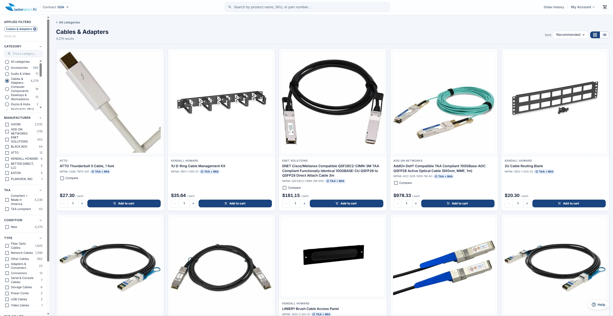

One Workspace
Connected customers, opportunities, documents, and products.
John Paul Jones Super Intelligence
GovCRM brings customers, opportunities, documents, products, workflows, and decisions into one connected workspace.
[ The challenge ]
When customer context, documents, products, and decisions live in separate places, teams lose time finding information instead of moving work forward.
Customer details, products, documents, and updates live across disconnected tools.
Manual coordination and handoffs slow the work that matters.
Opportunities, decisions, and next steps are difficult to see in one place.
[ Run your business ]
The operating workspace for the people, information, and decisions that move your business forward.

Connected customers, opportunities, documents, and products.
The details behind every decision, in one place.
Processes that adapt to how your business works.
[ Core capabilities ]
GovCRM connects the information and workflows your team needs to keep business moving.
Keep customer context, opportunities, documents, and next steps connected.
Give your team one reliable place for the products and details behind every decision.
Organize requests, handoffs, follow-ups, and the work moving across your team.
Keep the right context close to the work so teams can act with confidence.
[ GovCRM for government resellers ]
GovCRM brings the full connected business workspace to government reselling—combining customer relationships, requirements, product research, vendor coordination, and quote preparation.
Optimize GWAC-related workflows by organizing contract and task-order details, documentation, sourcing, pricing, approvals, and review in one place.
Bring requirements, documents, contract details, and customer context together.
Track sourcing conversations, requests, responses, and follow-ups.
Connect selected items and sourcing details to the quoting workflow.
[ Buy with confidence ]
A customer-facing, contract-aware catalog where customers can find compliant IT products and purchase directly.

Customers start in the contract vehicle that fits their purchase.
Surface the product information and compliance details that matter.
Customer purchases create documentation and a record in GovCRM.
[ How it works ]
JPJ SI supports both the team-led work of fulfilling opportunities and the customer-led experience of purchasing directly. Both stay connected in GovCRM.
Use GovCRM to manage customers, requirements, products, vendors, pricing, documents, and the work required to fulfill an opportunity.
OutcomeYour team moves complex opportunities forward with the right context.
Use GovStore to give customers a contract-aware way to find compliant products and purchase directly.
OutcomeEach customer purchase creates documentation and a connected record in GovCRM.
One connected record, whichever way the sale begins.
John Paul Jones Super Intelligence
See how GovCRM and GovStore can connect the work that moves your business forward.